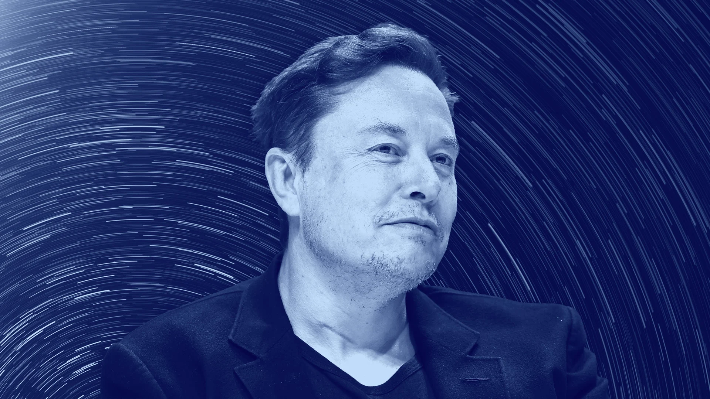
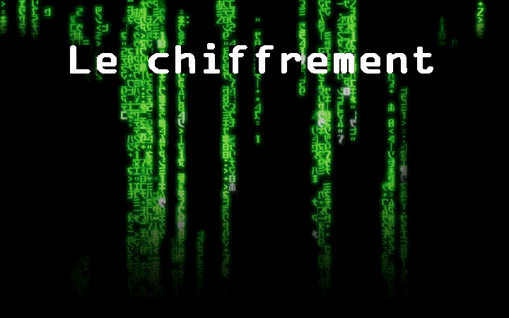

Bref Actu IA Mars-août 2025
L’IA s’approche de la singularité.
IA : Le pari de Sam Altman est-il voué à l’échec ?
« Les technologies actuelles ne sont pas fiables » : pour un spécialiste de l’IA, les modèles de langage atteignent leurs limites.
GPT-5, la grande désillusion : un an après la promesse d’Altman, la superintelligence attend toujours
Des équipes rouges en IA piratent facilement GPT-5 et avertissent qu'il est "pratiquement inutilisable" pour les entreprises
« Un coup de tonnerre en physique » : l’IA révèle un secret du plasma poussiéreux qui pourrait tout changer dans la recherche.
L'IA refuse de s'éteindre quand on lui ordonne : des experts alertent l'humanité.
Facebook, Instagram : Meta va entraîner ses systèmes d’IA avec vos données, voici comment l’en empêcher

EURO-IA-ACT 2025
L'IA et ses applications ont désormais un cadre réglementaire en Europe, qui correspond avec des exigences démocratiques de l'UE, et vise à protéger ses citoyens. Ce n'est pas le cas dans le reste du monde. Résumé de la loi sur l'intelligence artificicelle, avec un article de presse qui présente la logique de l'UE d'une approche par les risques. En france, outre La CNIL qui veille au grain, zoom sur le Conseil national du numérique qui amorce une transition pour devenir le Conseil de l’intelligence artificielle et du numérique (CIAN). Le CIAN développera des coopérations renforcées avec les autres institutions du réseau dont le Conseil d’analyse économique, mais également avec des institutions comme le Conseil économique, social et environnemental et le Comité consultatif national d’éthique du numérique.
Bref Actu IA Février 2025
Une IA génère des puces aussi incompréhensibles que performantes.
Protoclone : le 1er robot avec un squelette et des muscles, inspiré par Westworld !
Microsoft a dévoilé Majorana 1, un processeur quantique qui utilise des qubits topologiques, capable d'accueillir jusqu'à un million de qubits sur une seule puce.
L'IA Act entre vigueur dans l'Union Européenne pas de surveillance de masse, ni de crédit social, tels sont les engagements de l'UE envers ses citoyens.
L'IA est-elle consciente ? Le professeur Richard Dawkins affirme que ChatGPT a réussi le test de Turing sur la conscience, mais d'autres experts n'y voient qu'une simple illusion de pensée.
Pour conclure cette revue de presse et en prévision d’un dossier sur La métaphysique des machines. Même si le sujet de l’auto-conscience des machines n’est qu’abordé, le sujet non défini, et la question maladroitement posée, cet article reste intéressant. En effet nous verrons dans un prochain dossier que la métaphysique de la cybernétique est étudiée, depuis les années 50, par des auteurs tels que Norbert Wiener ou G Günther.

Les dangers de l'auto-réplication
L'IA a franchi la ligne rouge de l'auto-réplication : deux grands modèles de langage (LLM) populaires ont franchi une « ligne rouge » après avoir réussi à se répliquer sans assistance humaine.
Bref Actu IA Janvier 2025
Les USA ont très peur que la Chine crée une IA supérieure à l’humain.
La France forge l’avenir de la technologie avec cette puce unique au monde qui pourrait relancer son industrie, soutenue par 3 millions d’euros de l’Europe
Une IA en avance: elle a engendré ce que l'évolution n'a pas encore conçu
Ces robots humanoïdes vont courir le semi-marathon de Pékin (avec des humains) !
La gouvernance des relations Hommes-Machines et la Science-Fiction
Un robot contrôlé par l'IA a convaincu ses collègues robots de rentrer chez eux après leur journée de travail. L'expérience met en lumière les avancées fascinantes et potentiellement perturbatrices de l'IA. Que nous dit la Science-Fiction sur la gouvernance "Homme-Machine" ? Voici 100 Romans de Science Fiction, analysés par Chatgpt 4 qui abordent ce thème pour nous offrir une synthèse de la vision de la gouvernance Homme machine en SF. C'est un gros dossier, cher lecteur, armez-vous de courage pour lire cette liste qui malheureusement n'est pas exhaustive. 100 oeuvres de SF passées en revue pour dégager les tendances et faire la synthése des modes de gouvernance suggérés par les auteurs.
Bref Actu IA Décembre 2024
Open AI aurait atteint l'AGI avec son modéle o1 ?
La Chine prend la tête avec une intelligence artificielle qui surpasse GPT-4 dans les raisonnements complexes !
Grace au photon unique, l'ordinateur quantique enfin miniaturisé
Google revendique une avancée "historique" dans l'informatique quantique
Bientôt un article sur la gouvernance "Homme-Machine" dans les oeuvres de Science Fiction, pour faire echo au dossier sur la gouvernance digitale. 100 œuvres de SF passées en revue pour dégager les tendances et faire la synthèse des modes de gouvernance suggérés par les auteurs.
La gouvernance digitale
Sarah Nicole présente le protocole DSNP (Decentralized Social Networking Protocol), développé par Project Liberty. Ce protocole ouvert et décentralisé vise à redonner aux utilisateurs le contrôle sur leur "graphe social" – l’ensemble des données sociales (amis, interactions, contenus partagés) qui définissent leur identité numérique, aujourd’hui détenu par les plateformes comme Facebook ou Twitter.
Avec le DSNP, ces données pourraient être transférées d’une plateforme à une autre, tout en offrant une gouvernance participative où chaque utilisateur aurait son mot à dire.
Bref Actu IA Novembre 2024
Open AI fait mine de bouder l’UE
Découverte : Intrication de quarks
Le réalisateur de Terminator mise sur L’IA
Invention : Film photo-électrique ultrafin
AI Safety Clock
Quand va-t-on perdre le contrôle de l’IA ? Cette horloge indique la date.
L’intelligence artificielle, autrefois simple concept de science-fiction, s’est transformée en une réalité bouleversante. Depuis deux ans, les progrès sont si rapides que cela en devient inquiétant. Pour alerter le grand public, l’IMD de Lausanne (International Institute for Management Development) a conçu une horloge unique : l’AI Safety Clock.
.

Les prévisions du futurologue Raymond Kurzweil
Voici à quoi devrait ressembler notre futur proche, selon un ponte de l'IA. Le futurologue Raymond Kurzweil partage ses trois principales prédictions pour l'horizon 2050.Un système hautement autonome capable de surpasser l'humain dans la plupart des tâches devrait être disponible d'ici à 2029. Repéré sur BBC Science Focus Magazine.

Les prévisions de Sam ALtman CEO Open AI
Focus sur Sam Altman,
Biographie
Prédictions : Naissance d'une IA super intelligente d'ici quelques milliers de jours, capable de découvrir toute la physique, et de réparer le climat.
Stratégie : Une concentration industrielle verticale, énergie, usine de puces et de composants semiconducteurs, et centres de données, pour un coût qui s'élèverait à des centaines de milliards de dollars, dont la recherche d'investisseurs et de capitaux étrangers pourrait nuire à la sécurité US..

Les prévisions d'Elon Musk
Biographie
Prédictions : l'IA atteindra le niveau de l'intelligence humaine d'ici 1 à 3 ans. En 2029, l'IA devrait atteindre une capacité d'intelligence dépassant celle de tous les humains combinés.
Stratégie : Une concentration industrielle matricielle fondée sur l'innovation, Produits grand public avec Tesla, recherche et developpement avec Neuralink, Mégacentres de données et IA - cluster Colossus, lanceur de satellites et conquête martienne avec Space X, et désormais homme politique.

Le biais de la récompense dans le processus d'apprentissage de l'IA
Quand l'inspiration d'une autrice de Science Fiction de Métal Hurlant devance les préoccupations des chercheurs en IA.
L’Allemagne inaugure le premier ordinateur quantique mobile au monde pour 2027
L’armée allemande crée une impatience inédite avec l’annonce du première ordinateur quantique mobile au monde à 35 millions d’euros prévu pour 2027.

Optimus, EngineS02, Boston Robotics
Optimus est promis en précommande pour décembre 2024 au prix de 20 000 €. Tesla tient à garder son leadership sur le marché domestique occidental, mais sur le plan mondial la concurrence asiatique est très sérieuse.
La décision de la Californie
Alors que l’Union européenne s’est dotée d’un règlement sur l’intelligence artificielle (IA), la Californie fait marche arrière. Le gouverneur de Californie a mis son veto à la proposition de loi de sécurité de l’IA, justifiant sa décision par la crainte d’une régulation freinant l’innovation.

PODCAST – L’IA, la clé pour déchiffrer nos messageries sécurisées? - Le Temps
Ce nouvel épisode aborde les risques posés par l’essor des techniques d’intelligence artificielle en matière de cybersécurité avec une spécialiste du chiffrement. Résumé de l'interview de Francesca Musiani du CNRS, et de l'actu IA de Gréboire Barbey